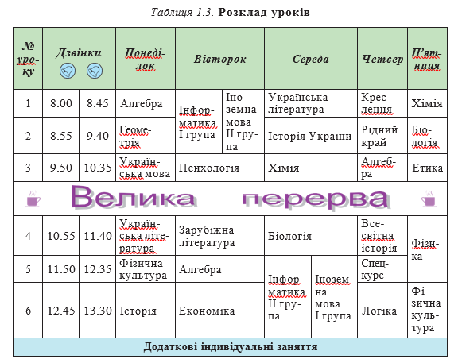
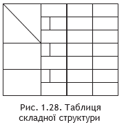
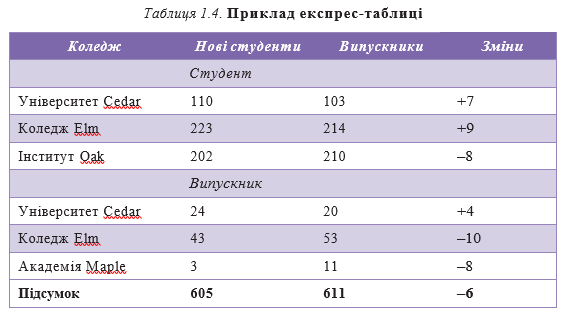
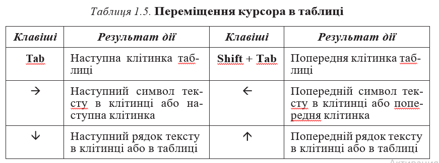
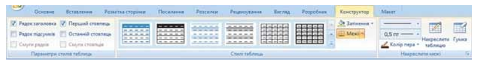

Розділ 3: Таблиці в текстових документах
Для впорядкування і наочного подання в документах даних різних типів використовуються таблиці. Дані, подані в таблиці, виглядають компактно і зручні для сприймання (табл. 1.3).
Таблиця складається зі стовпців і рядків, на перетині яких знахо- дяться клітинки. Стовпці, рядки, клітинки є об’єктами таблиці. Табли- ця у Word 2007 може містити до 63 стовпців і довільну кількість рядків. У клітинках таблиці можуть розміщуватися текст, числа, рисунки, формули і навіть інші таблиці.
Як видно з наведеного прикладу (табл. 1.3), висота рядків і шири- на стовпців таблиці може бути різною. Кілька клітинок можуть бути об’єднані в одну, а деякі з клітинок можуть бути розділені на кілька. Орієнтація тексту в клітинці може бути горизонтальною або вертикаль- ною. Для різних об’єктів таблиці можна встановити межі різного типу та різну заливку.
Таблиця як об’єкт текстового документа має такі властивості:
- розмір таблиці – задається шириною таблиці в сантиметрах або у відсотках від ширини сторінки;
- кількість стовпців і рядків у таблиці; 
- вирівнювання таблиці на сторінці – може набувати таких значень: за лівим краєм, за правим краєм, по центру;
- обтікання таблиці текстом – може набувати таких значень: без обтікання, з обтіканням навколо таблиці;
- межі таблиці – задаються кольором, типом і шириною меж всієї таб- лиці або окремих її об’єктів;
- заливка об’єктів таблиці – задається кольором і візерунком та ін.
Створення таблиці
У Word 2007 існує кілька способів створення таблиці в текстовому до- кументі:
- вставити таблицю простої структури;
- накреслити таблицю довільної структури;
- вставити таблицю з колекції шаблонів;
- перетворити фрагмент тексту в таблицю.
Усі команди створення таблиць знаходяться у списку кнопки Табли- ця групи Таблиці вкладки Вставлення.
І спосіб. Вставити в документ таблицю простої структури можна так:
- Вибрати в документі місце, де потрібно вставити таблицю.
- Виконати Вставлення - Таблиці - Таблиця.
- Виділити на схемі таблиці необхідну кількість рядків і стовпців та клацнути ліву кнопку миші. Наприклад, на рисунку 1.27, а виділено частину схеми, що складається з 3 стовпців і 5 рядків.
У цей спосіб можна створити таблицю, у якій не більше 10 стовп- ців і 8 рядків. Якщо ж потрібно створити більшу таблицю, то її можна вставити в текстовий документ, виконавши Вставлення Таблиці Таблиця Вставити таблицю. Потім у відповідних полях діалогового вікна Вставлення таблиці (рис. 1.27, б) потрібно вказати кількість стовп- ців і рядків, спосіб визначення ширини стовпців нової таблиці та вибрати кнопку ОК. Для ширини стовпців можна встановити такі значення:
- постійна – ширина всіх стовпців таблиці однакова і вказується користувачем у полі з лічильником;
- за вмістом – попередньо ширина стовпців автоматично встановлюється мінімальною, а під час уведення даних у клітинки ширина стовпця автоматично збільшується;
- за шириною вікна – ширина стовпців визначається автоматично ділен- ням ширини робочої області документа на кількість стовпців таблиці.
ІІ спосіб. Таблицю будь-якої структури можна накреслити. Особливо це доцільно, коли таблиця має складну структуру, наприклад таку, як на рисунку 1.28. Для цього потрібно:
- Виконати Вставлення - Таблиці - Таблиця - Накреслити таблицю.
- Вказівником, який матиме вигляд олівця, намалювати контур усієї таблиці.
- Намалювати лінії, що розділяють рядки та стовпці.
Якщо під час креслення таблиці були створені зайві або помилкові лінії, їх можна «стерти», використавши інструмент Гумка. Для цього слід виконати Конструктор - Накреслити межі - Гумка, навести вказівник (його вигляд буде в цей час змінений на такий ) на зайву лінію і вибрати її. Після видалення лінії кнопку Гумка слід вибрати повторно.
ІІІ спосіб дає змогу вставити в документ шаблон таблиці з колек- ції відформатованих і заповнених зразками даних Експрес-таблиць. На- приклад, в таблиці 1.4 наведено один із шаблонів колекції:
Для застосування зазначеного способу слід виконати такий алгоритм:
- Вибрати в документі місце, де потрібно вставити таблицю.
- Виконати Вставлення - Таблиці - Таблиця - Експрестаблиці.
- Вибрати в списку Вбудовані потрібний шаблон.
Користувач може створити власну експрес-таблицю, зберегти її у ко- лекції та використовувати за потреби. Для цього слід відформатувати вже створену таблицю за власним бажанням, виділити її та виконати Вставлення - Таблиці - Таблиця - Експрес-таблиці - Зберегти ви- ділений фрагмент у колекції експрес-таблиць.
IV спосіб . Виділений фрагмент тексту можна перетворити в таблицю, використавши послідовність дій Вставлення - Таблиці - Таблиця - Перетворити на таблицю. У діалоговому вікні треба вказати потрібну кількість стовпців і символи, які є роздільниками клітинок (пропуски, табуляції, розриви абзаців, крапки з комою тощо).
Введення даних у таблицю і переміщення по таблиці
Після того, як таблиця створена, її потрібно заповнити даними. Текст уводиться в поточну клітинку таблиці за відомими вам правилами введення тексту або, у випадку використання експрестаблиці, дані в таблиці замінюються на потрібні.
Під час уведення даних у клітинки ширина стовпця і висота рядка ав- томатично змінюються, якщо введений текст не вміщається у клітинку – такий режим установлено за замовчуванням. Якщо цей режим потрібно відмінити, достатньо вибрати довільну клітинку таблиці та виконати Макет - Таблиця - Властивості - Таблиця - Параметри і зняти позначку прапорця Автодобір розмірів за вмістом.
Щоб перемістити курсор у певну клітинку, її потрібно вибрати вказів- ником або скористатися клавішами керування курсором (табл. 1.5)
Виділення об’єктів таблиці
Текст у таблиці, саму таблицю та її об’єкти можна редагувати і фор- матувати. Для виконання цих операцій об’єкти таблиці, над якими ви- конуються дії, необхідно зробити поточними або виділити.
За вибору будь-якого об’єкта таблиці на Стрічці з’являється дві тимчасові вкладки Конструктор і Макет у тимчасовому розділі Табличні знаряддя.
Виділення об’єктів можна виконати одним з двох способів:
- Використовуючи елементи керування Стрічки: зробити потрібний об’єкт таблиці поточним, виконати Табличні знаряддя - Макет - Таблиця - Виділити та вибрати в списку потрібну команду: Вибра- ти клітинку, Виділити рядок, Виділити стовпець чи Виділити таблицю.
- Використовуючи мишу.
Редагування таблиці та її об’єктів
Редагування тексту в таблиці здійснюється звичайними для Word способами. Для швидкого очищення вмісту всієї таблиці або окремих її об’єктів достатньо їх виділити і натиснути клавішу Delete: дані будуть видалені, а сама таблиця залишиться.
Рис. 1.29. Тимчасова вкладка Макет
Редагування структури таблиці передбачає додавання або видалення окремих її об’єктів, об’єднання або розділення клітинок таблиці та ін. Усі елементи керування, які використовуються для виконання цих опе- рацій, містяться на вкладці Макет (рис. 1.29). Більшість з відповідних команд розміщено в контекстному меню об’єктів таблиці.
У групі Рядки та стовпці розміщені кнопки для вставлення та вида- лення відповідних об’єктів. Усі ці операції застосовуються до виділених або поточних об’єктів таблиці. Наприклад, для вставлення додаткового рядка потрібно виділити рядок, біля якого вставлятиметься новий, та вибрати одну з команд Вставити зверху чи Вставити знизу залежно від бажаного результату. Додатковий рядок у кінці таблиці можна також вставити, натиснувши клавішу Tab в останній клітинці таблиці.
Аналогічно в таблицю можна вставити стовпці, використавши коман- ди Вставити зліва чи Вставити справа.
Для вставлення в таблицю окремої клітинки по- трібно відкрити діалогове вікно зазначеної групи та вибрати спосіб вставлення – зі зсу- вом вправо чи униз. У разі вибору способу зі зсувом вправо в поточному місці з’явиться нова клітинка, а всі інші клітинки рядка перемістяться правіше. Під час вибору способу зі зсувом униз у таблиці на поточному місці з’явиться новий рядок.
Додати до таблиці рядок чи стовпець також можна, вибравши відповідний перемикач у вікні
Додавання клітинок.
Видалити виділений рядок, стовпець, окрему клітинку або всю таблицю можна за допомогою команд списку «Видалити» чи клавіші Backspace.
Щоб об’єднати кілька суміжних клітинок в одну, потрібно їх виділити та натиснути кнопку «Об’єднати клітинки» у групі «Об’єднання». Після об’єднання вміст клітинок поєднується і відображається в новій спільній клітинці.
Для розділення однієї або кількох сусідніх клітинок виконайте такі дії:
- Виділіть потрібні клітинки.
- На вкладці «Макет» у групі «Об’єднання» натисніть кнопку «Розділити клітинки».
- У діалоговому вікні задайте кількість рядків і стовпців, на які потрібно розділити клітинки.
- Виберіть спосіб розміщення тексту після розділення, установивши відповідний прапорець.
- Натисніть ОК.
Розділити чи об’єднати клітинки можна також, використавши інструменти «Накреслити таблицю» та «Гумка» з групи «Накреслити межі» вкладки «Конструктор».
Кнопку «Розділити таблицю» з групи «Об’єднання» використовують, коли таблицю потрібно розділити на дві — наприклад, щоб вставити між ними текст або перенести частину таблиці на іншу сторінку. Для цього курсор необхідно розмістити в тому рядку таблиці, перед яким планується розрив.
Якщо таблиця велика і займає більше ніж одну сторінку текстового документа, заголовки стовпців можна зробити такими, що повторюються автоматично на наступних сторінках. Для цього потрібно виділити рядок заголовків на початку таблиці та виконати команду Макет → Дані → Повторити рядки заголовка.
Якщо потрібно видалити таблицю з документа, але залишити її вміст у вигляді звичайного тексту, можна виконати перетворення таблиці на текст. Для цього:
- Виділіть таблицю.
- Виконайте Макет → Дані → Перетворити на текст.
- У діалоговому вікні «Перетворення на текст» вкажіть символ, який буде вставлятися замість меж клітинок (наприклад, табуляцію або кому).
Усю таблицю як єдиний об’єкт можна переміщувати або копіювати. Для цього таблицю потрібно виділити та скористатися відомими способами — перетягуванням, сполученнями клавіш або елементами керування на стрічці.
Сортування рядків таблиці дозволяє впорядкувати їх за зростанням або спаданням. Сортування можна виконувати за даними одного, двох або трьох стовпців. Якщо обрано сортування за двома стовпцями, то спочатку рядки впорядковуються за вмістом першого, а потім — другого стовпця, якщо значення в першому збігаються.
Рис. 1.30. Вікно Сортування рядків таблиці
Щоб виконати сортування рядків таблиці, дотримуйтесь алгоритму:
-
Виділіть частину таблиці, яку потрібно відсортувати.
Примітка: рядок заголовків, стовпець номерів рядків і підсумкові рядки зазвичай у сортуванні не беруть участі. - Виконайте Макет → Дані → Сортування.
- У вікні «Сортування» (рис. 1.30) оберіть стовпці, тип даних і напрям сортування.
- Натисніть ОК.
Форматування таблиці та її об’єктів
Для форматування тексту в таблиці застосовують стандартні засоби Word. Форматування самої таблиці та її об’єктів виконується за допомогою елементів керування тимчасових вкладок «Макет» і «Конструктор» розділу «Табличні знаряддя».
Розміри окремих об’єктів таблиці можна змінити кількома способами:
- Перетягуванням межі об’єкта. Наведіть вказівник на межу рядка чи стовпця (вигляд вказівника зміниться) і перетягніть межу в потрібному напрямі. Штрихова лінія покаже нове положення межі.
- Перетягуванням маркерів меж на лінійці. Коли курсор знаходиться в області таблиці, на горизонтальній лінійці з’являються маркери меж стовпців, а на вертикальній — маркери меж рядків. Перетягуючи їх, можна змінювати розміри відповідних стовпців і рядків.
Рис. 1.31. Межі рядків і стовпців таблиці на лінійках
Для меж таблиці та її елементів можна встановити колір, товщину та стиль ліній. Внутрішню область клітинок можна залити різними кольорами. За замовчуванням у Word таблиці мають обрамлення типу «сітка» — усі клітинки з тонкими суцільними лініями товщиною 0,5 пт без заливки. Змінити ці властивості можна на вкладці «Конструктор».
Рис. 1.32. Тимчасова вкладка Конструктор
Для налаштування властивостей меж використовують елементи групи «Накреслити межі». У групі «Стилі таблиць» можна встановити колір заливки (кнопка «Затінення») або змінити відображення меж (кнопка «Межі»). Ці параметри також доступні в діалоговому вікні групи «Накреслити межі».
Для оформлення таблиці можна застосувати один із вбудованих стилів. Стиль — це набір певних властивостей об’єкта з власною назвою. Обрати стиль можна у списку групи «Стилі таблиць» на вкладці «Конструктор». Вибір стилю супроводжується динамічним попереднім переглядом.
Готові стилі можна змінювати й зберігати в оновленому вигляді:
- Виберіть потрібний стиль у списку групи «Стилі таблиць» вкладки «Конструктор».
- Натисніть кнопку «Додатково» у списку стилів.
- Виберіть команду «Змінити стиль таблиці».
- Установіть нові значення властивостей у діалоговому вікні «Зміна стилю».
- Натисніть ОК.
Рис. 1.33. Діалогове вікно Властивості таблиці
Користувач може створити власні стилі таблиць, виконавши команду Конструктор → Стилі таблиць → Створити стиль таблиці. Після задання властивостей і натискання ОК стиль буде збережено в бібліотеці під заданим ім’ям.
Інші властивості таблиць (наприклад, розташування на аркуші або обтікання текстом) можна встановити у вікні «Властивості таблиці». Відкрити його можна через контекстне меню або командою Макет → Таблиця → Властивості.
Виконання обчислень у таблиці
Текстовий процесор Word має засоби для обчислень над числовими даними, розміщеними в клітинках. Для цього потрібно записати формули, які починаються зі знака =. У формулах можуть використовуватися числа, арифметичні дії, посилання на клітинки та вбудовані функції.
Посилання на діапазон клітинок:
- LEFT — клітинки зліва;
- RIGHT — клітинки справа;
- ABOVE — клітинки вище;
- BELOW — клітинки нижче.
Основні функції:
- AVERAGE — знаходить середнє арифметичне значень (=AVERAGE(LEFT));
- MAX — знаходить найбільше значення (=MAX(RIGHT));
- MIN — знаходить найменше значення (=MIN(ABOVE));
- SUM — обчислює суму чисел (=SUM(BELOW)).
Щоб провести обчислення, виконайте наступний алгоритм:
- Установіть курсор у клітинку, де має з’явитись результат.
- Виконайте Макет → Дані → Формула для відкриття вікна «Формула».
- У полі введення запишіть потрібну формулу або виберіть функцію зі списку «Вставити функцію».
- За потреби задайте формат результату.
- Натисніть ОК.
Зміна даних у клітинках не оновлює результати автоматично. Щоб оновити обчислення, виділіть таблицю або клітинку з формулою й натисніть F9, або скористайтеся командою «Оновити поле» у контекстному меню.